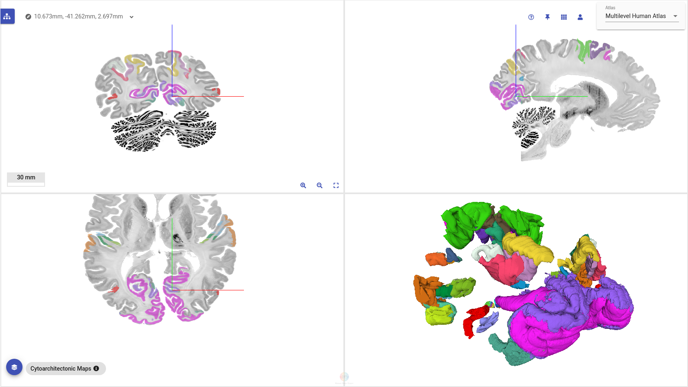

Featured Paper
Convolutional Neural Networks for cytoarchitectonic brain mapping at large scale
We are happy to present a new paper featuring the BigBrain dataset! Convolutional Neural Networks for cytoarchitectonic brain mapping at large scale (Schiffer et al., 2021)was recently published in the NeuroImage journal. It proposes a novel method for automatic classification of cytoarchitectonic brain areas in large series of consecutive histological brain sections. It is the first method that allows large scale analysis of human cytoarchitecture to become practically feasible, and represents a major milestone towards automated mapping of human brain structure.
The proposed method is based on Deep Neural Networks, a technique which has recently led to groundbreaking results in fields like image recognition, natural language processing and autonomous driving. Using this method, neuroscientists need only annotate a cytoarchitectonic brain region of interest in a handful of brain sections. These annotations are used to train a series of neural network models, which can then be used to automatically identify brain regions in sections without annotations. This approach can reduce the amount of annotations needed to be provided by neuroanatomy experts by several orders of magnitude, hence allowing the mapping of large series of brain sections (e.g. the BigBrain) to become practically feasible for the first time. For example, the Primary Visual Cortex (V1, hOc1), extending over 2400 sections in the BigBrain, was completely and successfully mapped using only 18 manually created annotations of the area. What an exciting and future-facing innovation!
The paper demonstrates the effectiveness of the method by fully segmenting the visual areas hOc1, hOc2, hOc3v and hOc5 in the BigBrain and reconstructing them in 3D. The resulting 3D models represent the highest resolution maps of human cytoarchitecture available today. All datasets are shared publicly via EBRAINS. They are accessible as part of the EBRAINS multilevel human brain atlas and via the EBRAINS knowledge graph
If we’ve caught your interest, be sure to check out the full paper here.
If you’re left with any intriguing questions/comments, we would love to hear your feedback. Email us at c.schiffer@fz-juelich.de. Happy reading!
High-resolution 3D maps of cytoarchitectonic brain areas in the EBRAINS multilevel human brain atlas.

Video of brain segment in motion